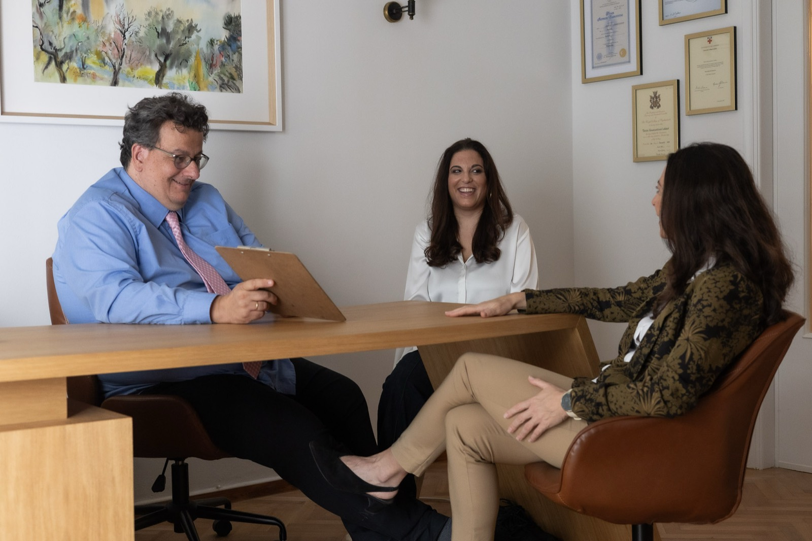

1
Book a consultationΚλείστε ραντεβού
Choose in-person or online. We listen first.Δια ζώσης ή online. Πρώτα σας ακούμε.
Comprehensive, multidisciplinary and evidence-based - aligned with international guidelines, so you get answers you can trust. Ολοκληρωμένη, διεπιστημονική και επιστημονικά τεκμηριωμένη - βασισμένη στις διεθνείς κατευθυντήριες οδηγίες, για απαντήσεις που μπορείτε να εμπιστευτείτε.
Choose in-person or online. We listen first.Δια ζώσης ή online. Πρώτα σας ακούμε.
Psychiatrist + psychologist, each with their own lens.Ψυχίατρος + ψυχολόγος, ο καθένας με τη δική του οπτική.
All findings integrated into one well-supported diagnosis.Όλα τα ευρήματα συντίθενται σε μία τεκμηριωμένη διάγνωση.
Findings, options and next steps - explained in detail.Ευρήματα, επιλογές και επόμενα βήματα - αναλυτικά.
Your assessment involves both psychiatric and psychological evaluation, carried out by a consultant psychiatrist and a specially trained psychologist / clinical mental health counsellor. The aim: a thorough understanding of attention, executive functioning, impulsivity and emotional regulation - and their impact on daily, academic and professional life. Η αξιολόγηση περιλαμβάνει ψυχιατρική και ψυχολογική εκτίμηση από ψυχίατρο και εξειδικευμένο ψυχολόγο / σύμβουλο ψυχικής υγείας. Στόχος: η ολοκληρωμένη κατανόηση της προσοχής, των εκτελεστικών λειτουργιών, της παρορμητικότητας και της συναισθηματικής ρύθμισης - και της επίδρασής τους στην καθημερινή, ακαδημαϊκή και επαγγελματική ζωή.
Differential diagnosis matters.Η διαφορική διάγνωση έχει σημασία. We place particular emphasis on identifying co-occurring conditions - anxiety, depression, sleep disorders, substance misuse, trauma or other neurodevelopmental difficulties - so nothing is missed. Δίνουμε ιδιαίτερη έμφαση στην αναγνώριση συννοσηροτήτων - άγχος, κατάθλιψη, διαταραχές ύπνου, χρήση ουσιών, τραύμα ή άλλες νευροαναπτυξιακές δυσκολίες - ώστε τίποτα να μη διαφεύγει.

Once your assessment is complete, our specialists hold a structured multidisciplinary discussion. All clinical information is integrated to reach a clear, well-supported diagnosis - covering both ADHD and any coexisting conditions. Με την ολοκλήρωση της αξιολόγησης, οι ειδικοί μας πραγματοποιούν δομημένο διεπιστημονικό διάλογο. Όλα τα κλινικά δεδομένα συντίθενται για μια σαφή, τεκμηριωμένη διάγνωση - που καλύπτει τη ΔΕΠΥ και κάθε συνυπάρχουσα δυσκολία.
The diagnosis and treatment recommendations are presented in a final feedback session, where findings, options and next steps are discussed in detail - at your pace, with room for every question. Η διάγνωση και το θεραπευτικό πλάνο παρουσιάζονται σε μια τελική συνάντηση, όπου τα ευρήματα, οι επιλογές και τα επόμενα βήματα συζητούνται αναλυτικά - με τον δικό σας ρυθμό και χώρο για κάθε ερώτηση.
You leave with a map, not just a label.Φεύγετε με έναν χάρτη, όχι απλώς μια «ετικέτα». Every diagnosis comes with a personalised plan: medication, coaching, psychotherapy, groups - or the right combination. Κάθε διάγνωση συνοδεύεται από εξατομικευμένο πλάνο: αγωγή, coaching, ψυχοθεραπεία, ομάδες - ή τον κατάλληλο συνδυασμό.